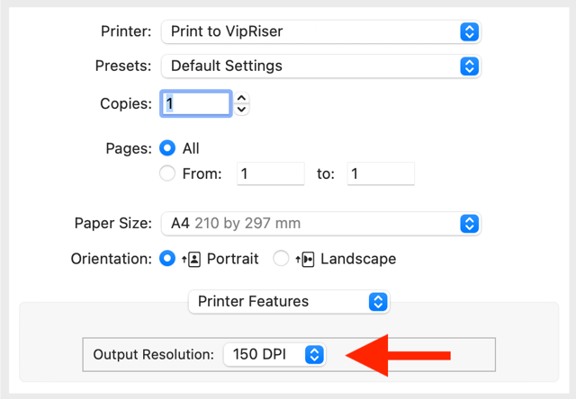
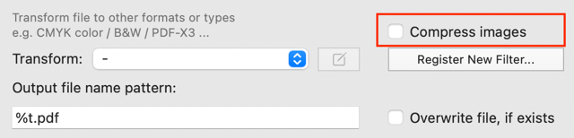

VipRiser Support
VipRiser has tree parts:
- virtual PDF printer which appers as your regular printer
- helper app for configuring the printing process and executing workflows
- collection of Automator’s actions to customize your workflows
The helper app appears as little icon in your menu and will show up any time you print a document (unless you configure it otherwise).
Q: VipRiser doesn’t launch
As VipRiser is not distributed trought Apple’s app store, you may have to verify the app is from knowns developer. You can get to preferences
Q: Custom workflows do not work
Make sure you installed VipRiserPDFOps properly and did enable 3rd party automator actions in Automator app.
Q: VipRiser is running but crashes or produces unexpected result
Make sure there is only one VipRiser.app on your system and install it in your Applications folder. The printer driver will launch the first app it finds, which might be wrong version.
Q: I’m getting poor output quality
Change default image resolution from 72PDI

NOTE: This is application specific setting and may be configured in ‘Printer Features’ section. If you really need to change it for all application, you can always edit the the PPD file manually
/Library/Printers/PPDs/Contents/Resources/vipriser.ppd
Make sure you turn off image compression in VipRiser’s configuration. This is needed only if you print to folder.

Q: VipRiser printer is in ‘paused’ state
Make sure the VipRiser.app is running while you print.
Q: How do I uninstall it
Execute the Uninstall Print Driver script from VipRiser’s menu. Quit and remove the helpper app.
Q: the virtual printer doesn’t show up even after I install the driver
You can add it using Terminal:
lpadmin -E -D "Print to VipRiser" -p "Print_to_VipRiser" -v "vipriser:/" -P /Library/Printers/PPDs/Contents/Resources/vipriser.ppd -o printer-is-shared=false
cupsenable "Print_to_VipRiser"
cupsaccept "Print_to_VipRiser"
Q: Using custom PPD
You can specify custom PPD when you install VipRiser printer or in the Printer & Scanner system preferences.